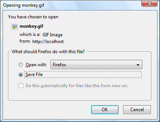

(PHP 4, PHP 5, PHP 7, PHP 8)
readfile — 输出文件
读取文件并写入到输出缓冲。
成功时返回从文件中读入的字节数， 或者在失败时返回 false
失败时抛出 E_WARNING 警告。
示例 #1 使用 readfile() 强制下载
<?php
$file = 'monkey.gif';
if (file_exists($file)) {
header('Content-Description: File Transfer');
header('Content-Type: application/octet-stream');
header('Content-Disposition: attachment; filename="'.basename($file).'"');
header('Expires: 0');
header('Cache-Control: must-revalidate');
header('Pragma: public');
header('Content-Length: ' . filesize($file));
readfile($file);
exit;
}
?>以上示例的输出类似于：

注意:
readfile() 自身不会导致任何内存问题。 如果出现内存不足的错误，使用 ob_get_level() 确保输出缓存已经关闭。
如已启用fopen 包装器，在此函数中， URL 可作为文件名。关于如何指定文件名详见 fopen()。各种 wapper 的不同功能请参见 支持的协议和封装协议，注意其用法及其可提供的预定义变量。